Rava chat mode: one conversation, two ways to talk
How I’m extending Rava’s voice patterns to chat, so people can type or talk in the same conversation.
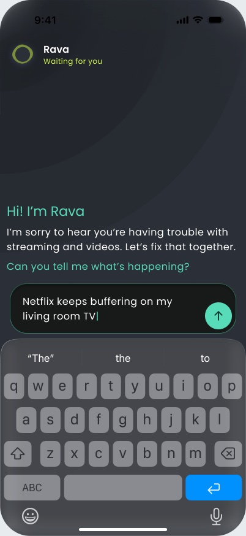
a · Types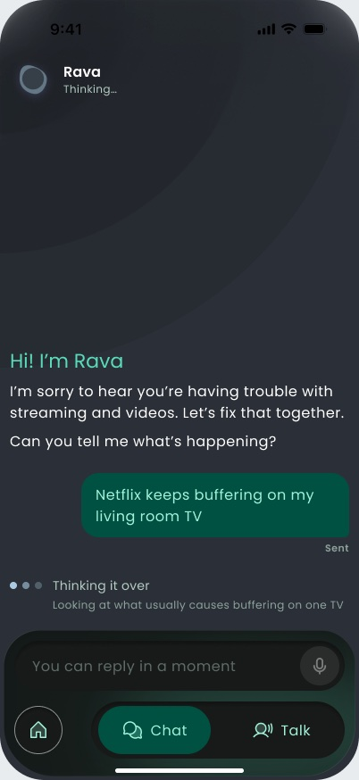
b · Thinks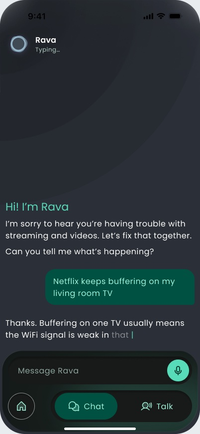
c · Replies d · Waits
d · WaitsThe customer types, Rava thinks, replies word by word, then waits with quick replies.
- The idea
- Chat mode keeps the same conversation but lets people type or send a voice message, and switch between Chat and Talk at any point.
- My approach
- Instead of designing chat from scratch, I turned the voice decisions into rules both modes share.
- Status
- All six tools have a chat version, plus failure states and a concept component set. In design.
TL;DR
Why chat
Rava started as voice only. Chat mode keeps the same conversation but lets people type or send a voice message, and switch between Chat and Talk at any point.
Not every moment allows for a phone call. The router is in the kitchen, the kids are circling the island, the grandparents are mid-story, and mom and dad are trying to get the TV back online. In that chaos, chat lets them fix the problem without having to shout over everyone.
What carried over from voice
Instead of designing chat from scratch, I turned the voice decisions into rules both modes share. They also live in a small concept component set: the orb avatar, the Chat/Talk switch, quick replies and the message field.
1
2
3
4
5
- The orb becomes the avatarSame states: blue while Rava works, lime when it’s the customer’s turn.
- Colour means whose turn it isTeal is the customer’s move.
- Rava’s words have no bubbleThey sit open on the background, as in voice.
- One-tap answersQuick replies as outlined chips.
- Chat / TalkSwitch at any point in the conversation.
Colour means whose turn it is
White is Rava telling, teal is the customer’s move, in both modes.
The orb becomes the avatar
In chat it sits in the header with the same states: blue while Rava works, lime when it’s the customer’s turn.
Rava’s words have no bubble
They sit open on the background, as in voice; only the customer’s words get bubbles.
Nothing fades
Every turn stays at full contrast, so people can scroll back and re-read anything if needed.
Same pace
Replies appear word by word at the voice screen’s speed, 40 characters a second.
One-tap answers
Quick replies appear as outlined chips under Rava’s question.
Every tool works in chat
All six tools have a chat version: the line test, WiFi coverage, speed test, WiFi spot check, photo and video. Each one runs inside the conversation instead of on a screen of its own.
01 Line test
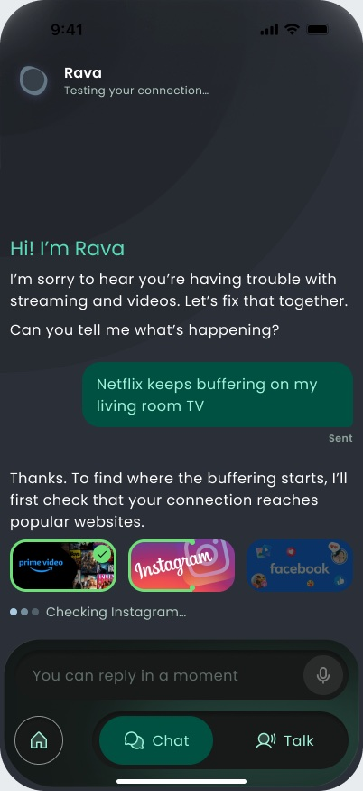
02 WiFi coverage
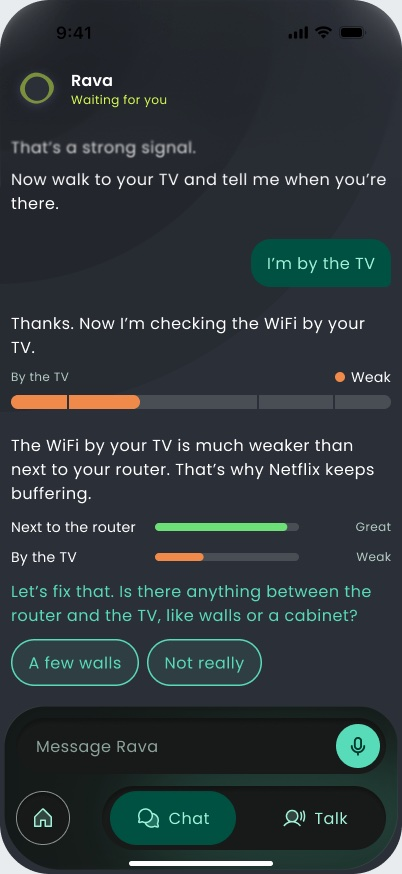
03 Speed test
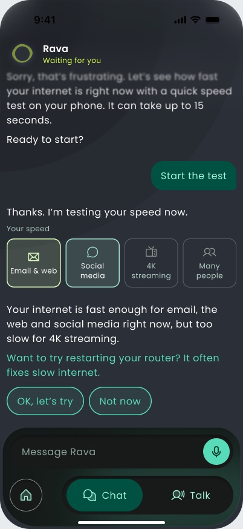
04 WiFi spot check
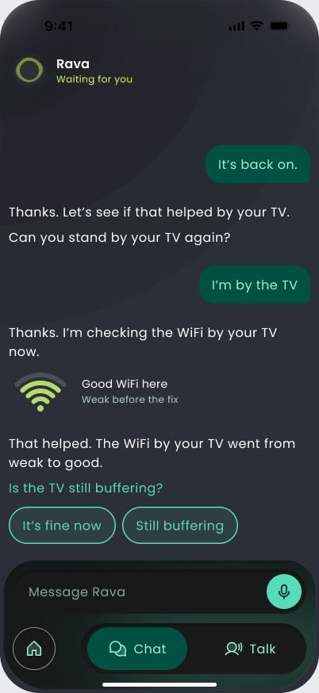
05 Photo
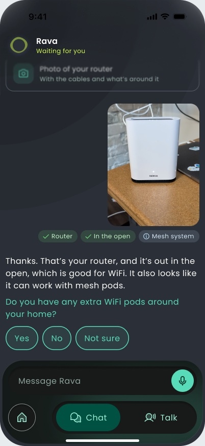
06 Video
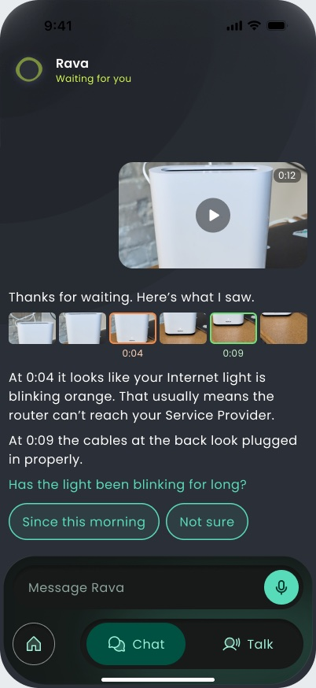
The coverage tool, in three steps
- Speed in MbpsPeople on faster plans read the numbers as promises, and called to complain.
- One bar, plain labelsThe bar empties as you walk away from the router, with a word for each state instead of a number.
- Two readings, comparedIn chat, Rava measures next to the router and again where the problem is: Weak or Great, never a percentage. If the phone drops off the WiFi, that spot is the dead spot.
When the AI can’t handle it
Each moment the AI can’t handle gets its own design instead of a generic error.
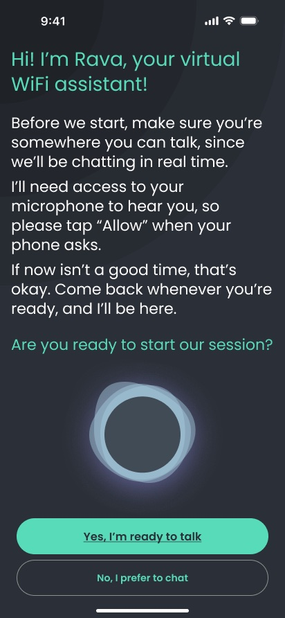
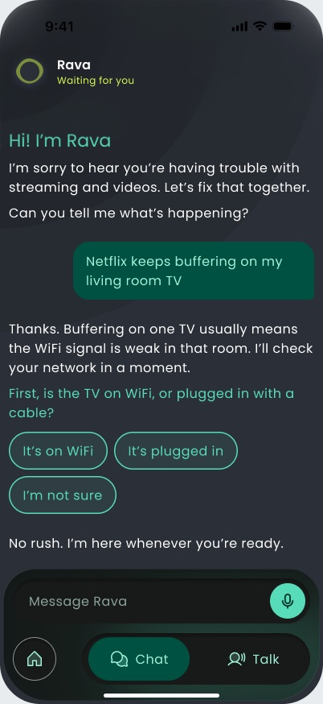
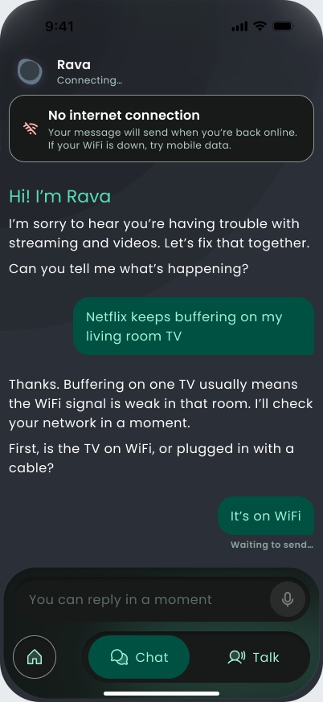
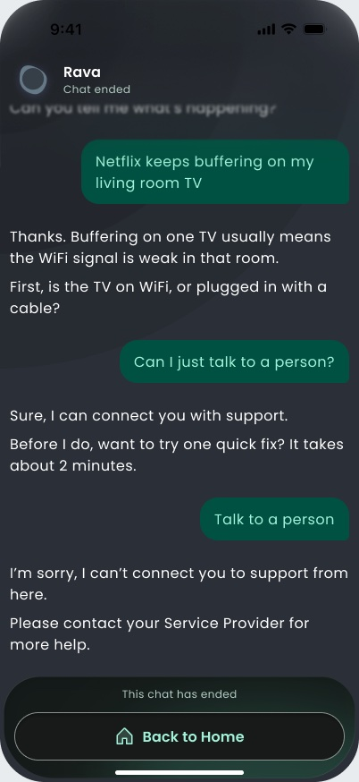